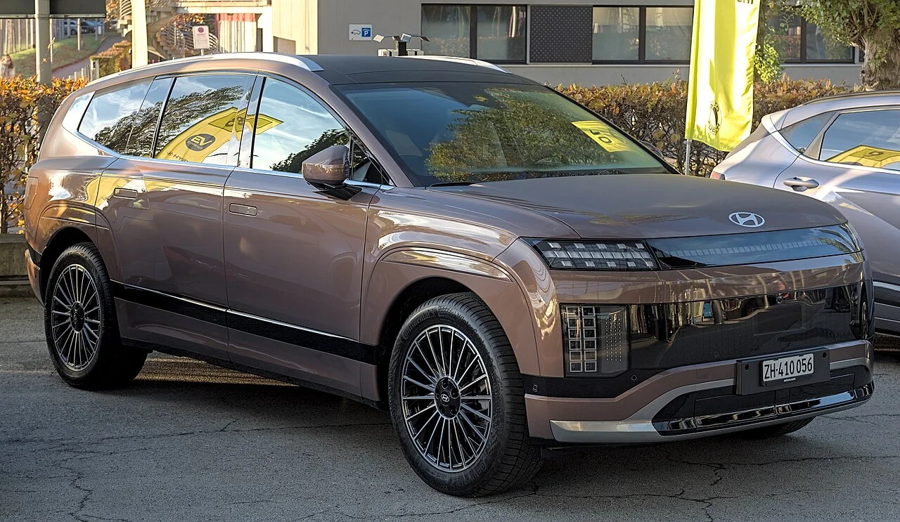
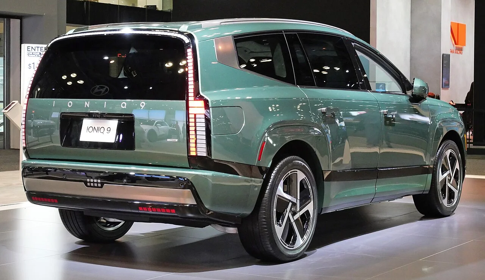
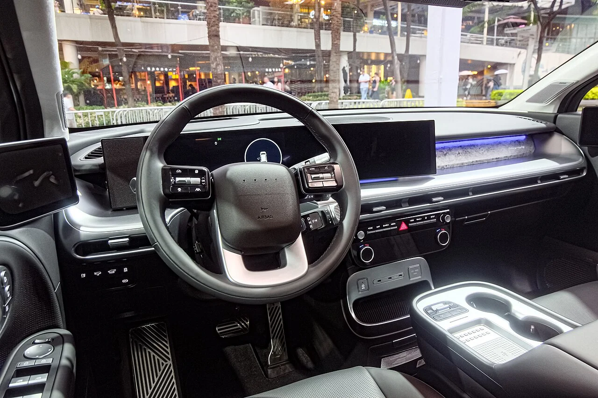

▲ 현대차의 프리미엄 3열 전기 SUV, 아이오닉9 ⓒ Alexander Migl, Wikimedia Commons (CC BY-SA 4.0)
현대차의 대형 3열 전기 SUV '아이오닉9'이 국내 전기차 시장에서 프리미엄 패밀리카 포지션을 굳혀가고 있습니다. E-GMP 플랫폼 기반의 넉넉한 실내 공간과 준수한 주행거리, 세단급 승차감까지 갖추며 단순한 이동 수단을 넘어선 완성도를 보여준다는 평가를 받고 있는데, 국내외 정보를 취합해 정리했습니다.
1. 차체 & 공간 — 3130mm 휠베이스가 만드는 동급 최대 공간

▲ 전장 5,060mm, 휠베이스 3,130mm에 달하는 아이오닉9의 측면부 ⓒ Alexander Migl, Wikimedia Commons (CC BY-SA 4.0)
아이오닉9은 전장 5,060mm, 전폭 1,980mm, 전고 1,790mm, 휠베이스 3,130mm에 달하는 큰 차체를 갖췄습니다. E-GMP 전기차 전용 플랫폼의 이점을 살려 엔진룸이 필요 없는 만큼, 이 넉넉한 휠베이스를 고스란히 3열 실내 공간으로 돌린 것이 특징입니다. 오토인리 등 국내 매체는 이를 "동급 최대 실내 공간"이라 평가하며, 3열까지 실사용이 가능한 몇 안 되는 전기 SUV라는 점을 강점으로 꼽았습니다.
2. 주행 인상 — 핫해치급 가속과 세단급 승차감의 공존

▲ 아이오닉9 후면부. 110.3kWh 배터리로 최대 532km까지 주행할 수 있다 ⓒ Kevauto, Wikimedia Commons (CC BY-SA 4.0)
최상위 트림인 캘리그래피 사양을 시승한 국내 매체들은 "핫해치급의 폭발적인 주행 성능과 고급 세단 수준의 정교한 승차감을 동시에 갖췄다"고 입을 모읍니다. 하이드로 부싱 서스펜션이 적용돼 대형 SUV임에도 노면 충격을 효과적으로 걸러내며, 3열까지 세단에 가까운 승차감을 전달한다는 평가입니다. 110.3kWh급 SK온 배터리를 탑재해 복합전비 4.1~4.3km/kWh, 최대 501~532km의 주행가능거리를 확보했습니다.
단순한 이동 수단을 넘어 프리미엄 3열 전기 SUV의 새로운 기준을 제시한다는 것이 대체적인 평가로, 가속력·주행거리·실내 공간·승차감이라는 네 마리 토끼를 균형 있게 잡았다는 점이 아이오닉9의 가장 큰 강점으로 꼽힙니다.
3. 가격 & 총평 — 보조금까지 더하면 실구매가 매력적

▲ 아이오닉9 캘리그래피 트림의 실내. 넉넉한 3열 공간이 이 차의 핵심 강점이다 ⓒ Ethan Llamas, Wikimedia Commons (CC BY-SA 4.0)
국내 판매 가격은 6,759만~7,960만 원으로 책정돼 있으며, 2026년 전기차 보조금(국비+지방비)을 적용하면 지역에 따라 약 300만~700만 원 더 저렴하게 구매할 수 있습니다. 3열까지 실사용 가능한 공간, 준수한 주행거리, 세단급 승차감까지 갖춘 만큼, 대가족이나 레저 활동이 잦은 소비자에게는 보조금까지 고려했을 때 상당히 매력적인 선택지로 꼽힙니다.